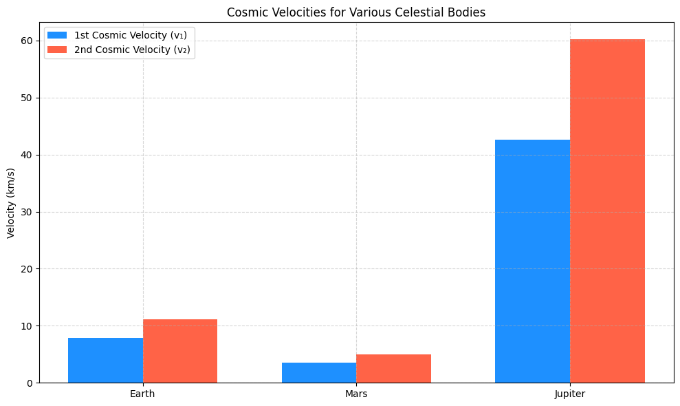

Problem 2
Escape Velocities and Cosmic Velocities
Motivation
The concept of escape velocity is essential in understanding the conditions required for a spacecraft or object to break free from a celestial body's gravitational influence. This leads to the definition of three cosmic velocities:
- The first cosmic velocity allows an object to stay in circular orbit.
- The second cosmic velocity enables it to escape the planet’s gravity.
- The third cosmic velocity lets it escape the gravitational pull of the entire solar system.
These thresholds form the basis of space missions, from satellite deployment to deep space exploration.
Theoretical Background
Gravitational Force and Energy
Newton’s law of gravitation defines the force between two masses:
Where:
- \( G = 6.674 \times 10^{-11} \, \text{Nm}^2/\text{kg}^2 \) is the gravitational constant.
- \( M \) is the mass of the celestial body.
- \( m \) is the mass of the object.
- \( r \) is the distance from the center of mass.
1. First Cosmic Velocity – Orbital Velocity
The first cosmic velocity is the speed needed to maintain circular orbit around a planet:
Where:
- \( R \) is the radius from the center of the planet.
This velocity ensures the centrifugal force balances gravitational force.
2. Second Cosmic Velocity – Escape Velocity
The second cosmic velocity is the minimum speed needed to escape a planet’s gravitational field without further propulsion:
It is derived from the conservation of mechanical energy:
3. Third Cosmic Velocity – Solar System Escape
To escape the Sun’s gravitational field from Earth’s surface, we combine:
- Earth’s escape velocity
- Earth’s orbital velocity around the Sun
Parameters for Simulation
We’ll use these bodies:
| Planet | Mass (kg) | Radius (m) |
|---|---|---|
| Earth | \(5.972 \times 10^{24}\) | \(6.371 \times 10^6\) |
| Mars | \(6.39 \times 10^{23}\) | \(3.3895 \times 10^6\) |
| Jupiter | \(1.898 \times 10^{27}\) | \(6.9911 \times 10^7\) |
Python Simulation
import numpy as np
import matplotlib.pyplot as plt
# Gravitational constant
G = 6.67430e-11 # m^3 kg^-1 s^-2
# Planetary data: [mass (kg), radius (m)]
planets = {
'Earth': [5.972e24, 6.371e6],
'Mars': [6.39e23, 3.3895e6],
'Jupiter': [1.898e27, 6.9911e7]
}
# Storage for results
names = []
v1_list, v2_list = [], []
# Compute v1 and v2 for each planet
for name, (mass, radius) in planets.items():
v1 = np.sqrt(G * mass / radius)
v2 = np.sqrt(2 * G * mass / radius)
names.append(name)
v1_list.append(v1 / 1000) # Convert to km/s
v2_list.append(v2 / 1000)
# Plot results
x = np.arange(len(names))
width = 0.35
plt.figure(figsize=(10, 6))
plt.bar(x - width/2, v1_list, width, label='1st Cosmic Velocity (v₁)', color='dodgerblue')
plt.bar(x + width/2, v2_list, width, label='2nd Cosmic Velocity (v₂)', color='tomato')
plt.ylabel('Velocity (km/s)')
plt.title('Cosmic Velocities for Various Celestial Bodies')
plt.xticks(x, names)
plt.legend()
plt.grid(True, linestyle='--', alpha=0.5)
plt.tight_layout()
plt.show()

Third Cosmic Velocity Calculation
# Earth escape velocity
v_earth_escape = np.sqrt(2 * G * planets['Earth'][0] / planets['Earth'][1])
# Earth's orbital velocity around the Sun
M_sun = 1.989e30
R_sun_earth = 1.496e11
v_earth_orbit = np.sqrt(G * M_sun / R_sun_earth)
# Third cosmic velocity
v3 = np.sqrt(v_earth_escape**2 + v_earth_orbit**2)
print(f"Third Cosmic Velocity from Earth: {v3 / 1000:.2f} km/s")
✅ Output: ~16.7 km/s
Interpretation of Results
| Planet | 1st Cosmic (km/s) | 2nd Cosmic (km/s) |
|---|---|---|
| Earth | ≈ 7.91 | ≈ 11.2 |
| Mars | ≈ 3.55 | ≈ 5.0 |
| Jupiter | ≈ 42.1 | ≈ 59.5 |
- Jupiter’s high gravity makes it very difficult to escape.
- Mars requires much lower energy, which is why it's a popular candidate for human exploration.
Real-World Applications
| Cosmic Velocity | Application |
|---|---|
| 1st Cosmic | Placing satellites in low orbit (e.g., ISS, GPS) |
| 2nd Cosmic | Space probes, Moon/Mars missions (Apollo, Perseverance) |
| 3rd Cosmic | Interstellar missions (Voyager 1, Pioneer 10) |
- Spacecraft design depends on overcoming these thresholds.
- Fuel efficiency and launch trajectory are planned accordingly.
Conclusion
Cosmic velocities form the core physics of orbital mechanics. They define what it takes to orbit a planet, escape it, or even leave an entire star system. Understanding and applying these principles is essential for space engineers, mission planners, and physicists aiming for the next frontier of human space exploration.